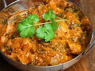

Chicken in Coconut Milk

Ingredients
Switch to Steps
-
1 Tbsp Ground Almonds
-
1 Tbsp Shredded Coconut
-
3 oz Coconut Milk
-
6 oz Ricotta Cheese
-
1 1/2 tsp Ground Coriander Seed
-
1 tsp Chili Powder
-
1 tsp Garlic
-
1 1/2 tsp Ginger Root
-
1 lb Chicken Breast
-
3 Whole Cardamon Pods
-
1 Bay Leaf
-
1 Red Chili Pepper, crushed
-
2 Tbsp Fresh Cilantro, chopped
Steps
Switch to Ingredients
-
Dry-roast the almonds and coconut in a wok or large pan
until they turn a shade darker.
Transfer the mixture to a large bowl.
-
Add the coconut milk, ricotta cheese, ground coriander,
chili powder, garlic, ginger and salt to the bowl.
Mix well.
-
Heat the vegetable oil in the pan and add the chicken cubes,
cardamon pods and bay leaf.
Stir-fry for about 2 minutes to seal the chicken.
-
Pour in the coconut mixture and stir well.
Lower the heat , add the chili and coriander,
then cover and cook for 10-12 minutes,
stirring occasionally to prevent the contents from sticking to the pan.
Uncover the pan, then stir and cook for 2 minutes more.